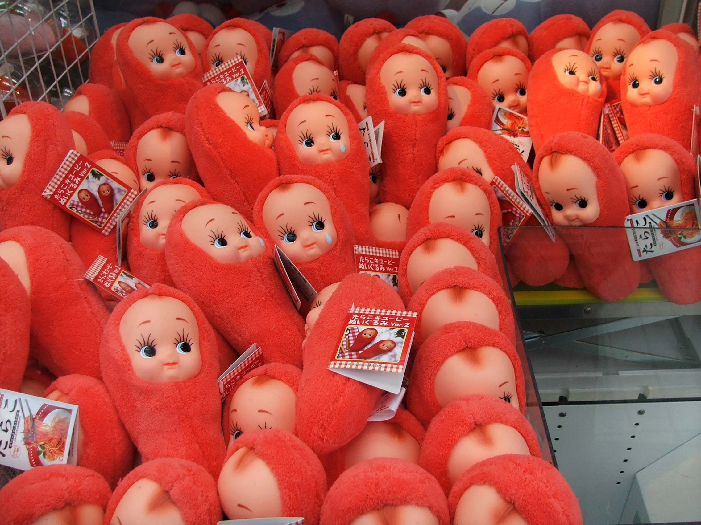
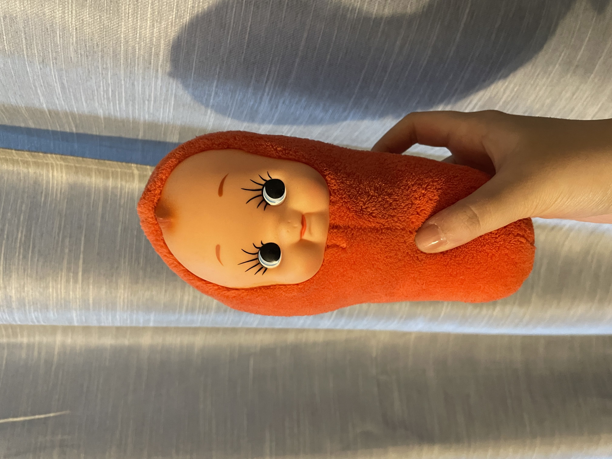
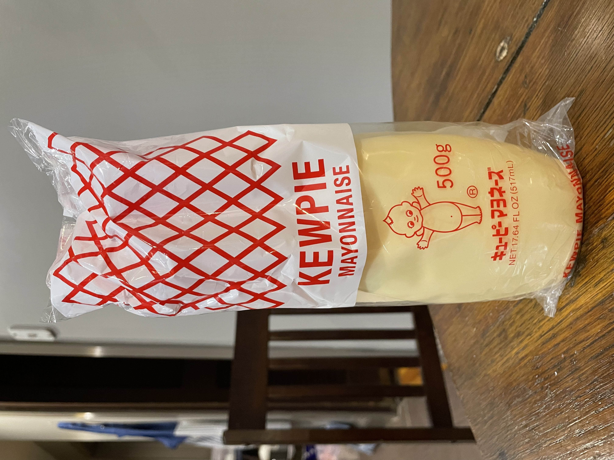

The cultural impact of Kewpies can be felt even to this day. There are numerous Kewpie doll collectors and aficionados around the world. The city of Branson, Missouri, where Rose O’Neill retired in, holds a “Kewpiesta” every year to commemorate the icon that is the Kewpie character. There is also the Bonniebrook Homestead in Missouri. The Bonniebrook Homestead is a museum dedicated to Rose O’Neill’s famous life and legacy. The museum holds Kewpie collectibles such as dolls, comic strips of the original illustrations, dishes, and more on display.
With the changing of time throughout history, Kewpie dolls have been undergoing many changes and iterations. After their success in the United States, Kewpie dolls became popularized in other parts of the world as well. Notably in Japan, the Kewpie character was utilized to advertise mayonnaise, thus the Kewpie Mayo brand was born. Because of this, the Kewpie character grew even more popular.
In present times, the Kewpie character has transformed into other iterations and brandings. For example, a more modern version of the Kewpie is the Sonny Angel brand originated in Japan. These are essentially similar to Kewpie dolls with their angelic features. Sonny Angel figurines are a popular collector’s item. Kewpie dolls have also had a rich history of collaborations and features with other brands. As mentioned before, there has been the Kewpie Mayo branding that popularized Kewpie in industries that were not predicted before.
   TikTok about Kewpies